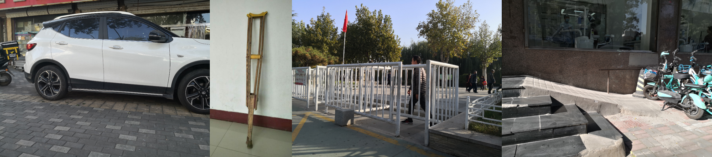
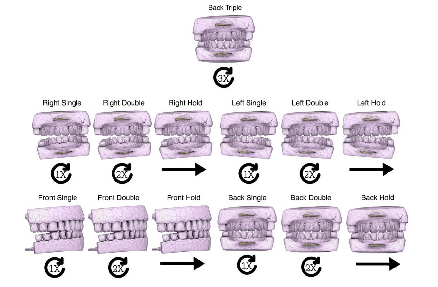
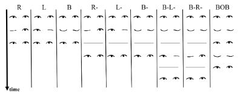
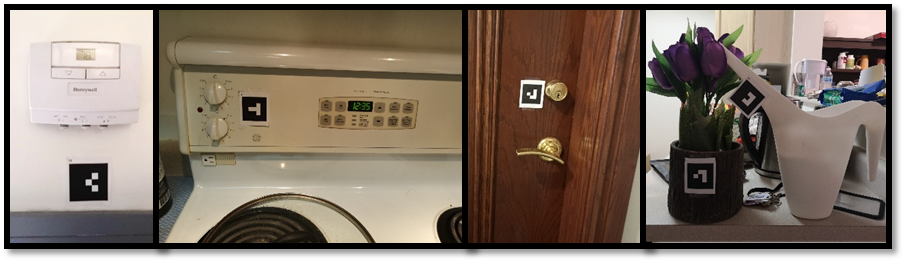
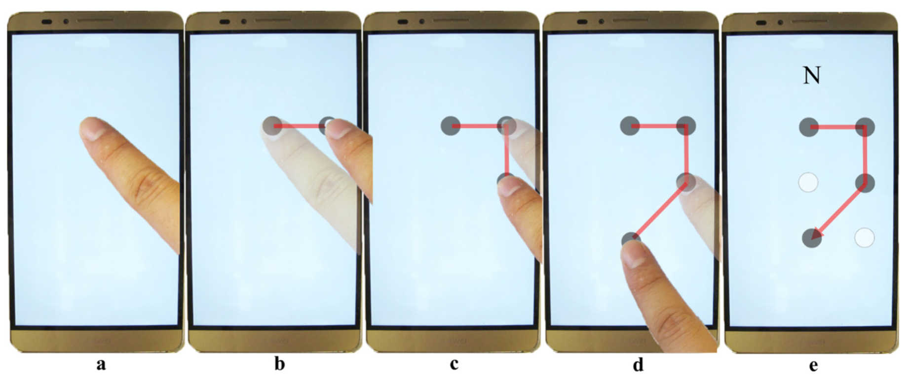
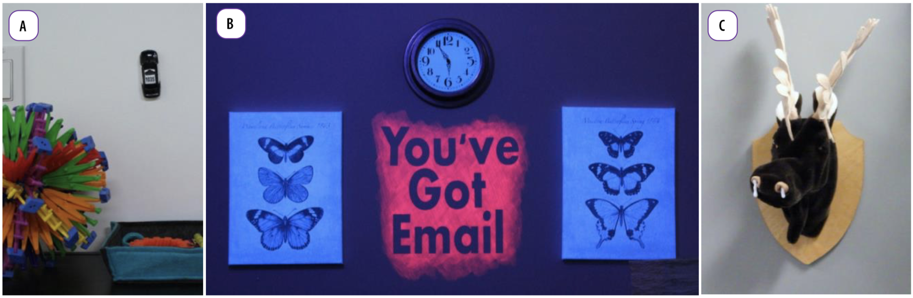
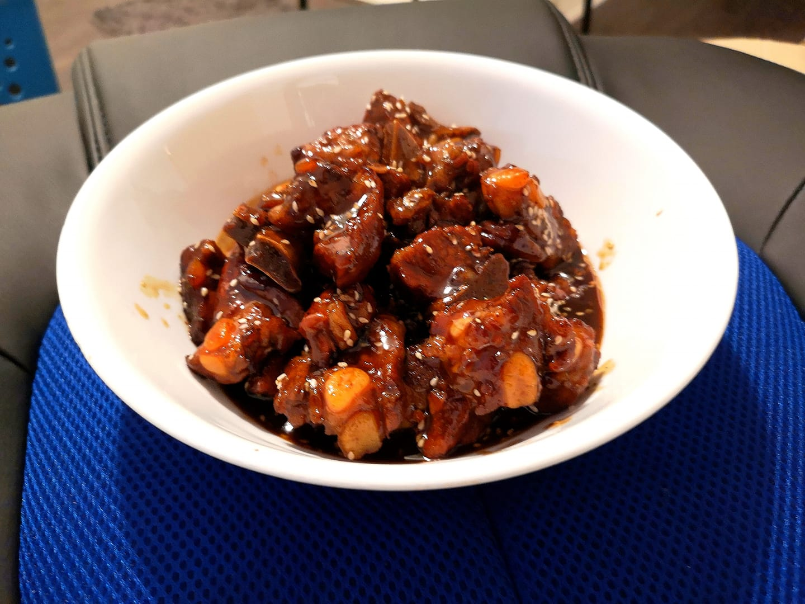
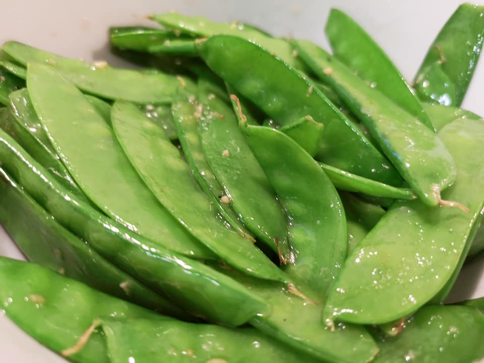
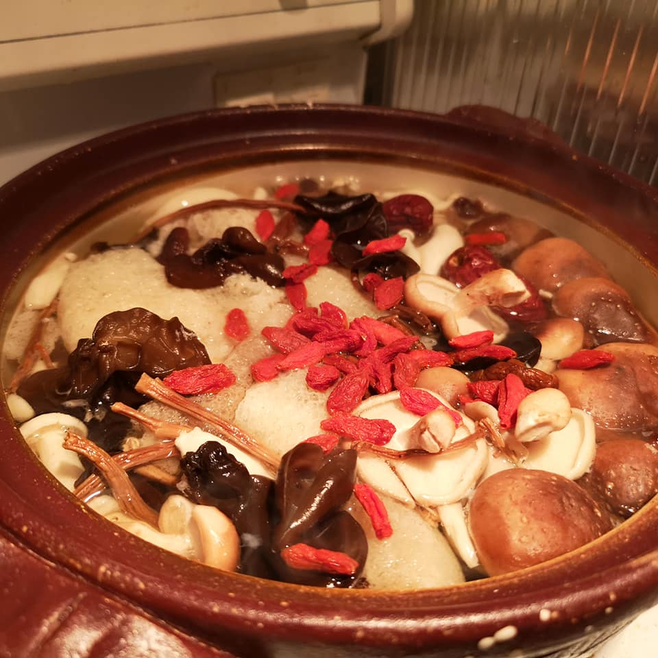
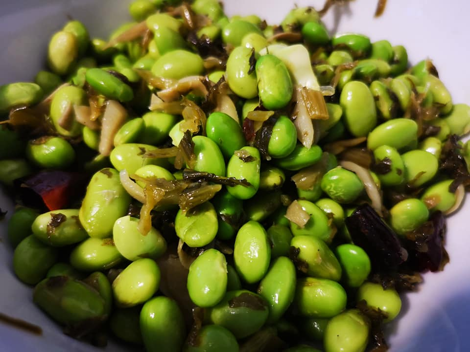

HCI, Accessibility, Ubicomp, and Cooking
Franklin Mingzhe Li is a PhD student supervised by Prof. Patrick A. Carrington in the Human-Computer Interaction Institute at Carnegie Mellon University. He obtained Master of Science degree supervised by Prof. Khai N. Truong in the Department of Computer Science at the University of Toronto. His research interests are in Human-Computer Interaction (HCI), Assistive Technology, and Ubiquitous Computing (UbiComp).
Besides, he is also a cook since 6 years old. He masters in Chinese, Japanese, Spanish, and Italian Cuisines.
Peer-Reviewed Conference or Journal Publications

"I Choose Assistive Devices That Save My Face" A Study on Perceptions of Accessibility and Assistive Technology Use Conducted in China
Franklin Mingzhe Li, Di Laura Chen, Mingming Fan, Khai N. Truong
In Proceedings of the ACM Conference on Human Factors in Computing Systems (CHI) , 2021 [PDF]

TeethTap: Recognizing Discrete Teeth Gestures using Motion and Acoustic Sensing on an Earpiece
Wei Sun*, Franklin Mingzhe Li*, Benjamin Steeper*, Songlin Xu, Feng Tian, Cheng Zhang (*Equal contribution)
In Proceedings of the 26th International Conference on Intelligent User Interfaces (IUI), 2021 [PDF]

Eyelid Gestures on Mobile Devices for People with Motor Impairments
Mingming Fan*, Zhen Li*, Franklin Mingzhe Li* (*Equal contribution)
In Proceedings of the 22th International ACM SIGACCESS Conference on Computers and Accessibility (ASSETS), 2020 [PDF] Best Artifact Award

FMT: A Wearable Camera-Based Object Tracking Memory Aid for Older Adults
Franklin Mingzhe Li, Di Laura Chen, Mingming Fan, Khai N. Truong
In Proceedings of ACM on Interactive, Mobile, Wearable and Ubiquitous Technologies (IMWUT), 2019 [PDF]

Face Recognition Assistant for People with Visual Impairments
Mohammad Kianpisheh, Franklin Mingzhe Li, Khai N. Truong
In Proceedings of ACM on Interactive, Mobile, Wearable and Ubiquitous Technologies (IMWUT), 2019 [PDF]

BrailleSketch: A Gesture-based Text Input Method for People with Visual Impairments
Franklin Mingzhe Li, Mingming Fan, Khai N. Truong
In Proceedings of the 19th International ACM SIGACCESS Conference on Computers and Accessibility (ASSETS), 2017 [PDF]

The Living Room: Exploring the Haunted and Paranormal to Transform Design and Interaction
Michelle Annett, Matthew Lakier, Franklin Mingzhe Li, Daniel Wigdor, Tovi Grossman, George Fitzmaurice
In Proceedings of the 2016 ACM Conference on Designing Interactive Systems (DIS), 2016 [PDF]
Professional Experiences
2019.05 - 2019.09
Research Intern at Apple (Turi). Mentored by Dr. Jeffrey P. Bigham, and Dr. Xiaoyi Zhang
2016.05 - 2017.08
Hardware Engineer at AMD
Awards, Grants and Fellowships
Inclusive Design Challenge Award (Co-applicant), US Department of Transportation ($300k), Jan 2021
Best Artifact Award, ASSETS 2020 ($500), Oct 2020
Faculty of Arts And Science Tuition Fellowship, University of Toronto ($18558), Sept 2018
Faculty of Arts And Science Program-Level Fellowship, University of Toronto ($1000), Nov 2018
Markham Intern of the Year Award Nominee, AMD, Aug 2017
UTRECS Scholarship, University of Toronto ($6000), Aug 2015
Media Coverage
Mobility21: Mobility21 Researchers Win US Department of Transportation Inclusive Design Challenge Award (2021.01)
New Scientist: Where have I left my wallet? This smart camera can remind you (2019.09)
Community Services
Associate Chair
CHI 2020 Late Breaking Works
Reviewers
CSCW 2021, CHI 2021, EICS PACM 2021, UIST 2020, IJHCS, CHI 2020, CHI 2020 Late Breaking Works, CHI 2019 Late Breaking Works
Student Volunteer
ASSETS 2020
Cooking



